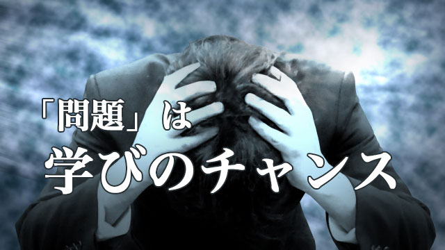

実は誰でも必要な体験をしている。
たとえそれが耐えがたく不幸なものに見えても、より大きな視点では必要だから起こっている。そんな発想の転換はできないでしょうか。
「いや、こんな体験は全然望んでいない」
「まさかこんなことが私の身に起こるとは思ってもみなかった･･･」
たいていの人は自分や家族の身に｢不幸｣な出来事が起こると、自分たちの不運を嘆き理不尽さに怒りを募らせたりするものです。
「リストラされた」「事故にあった」「病気で入院した」「子どもが学校に行きたくないと言い出した」
確かにこういう場合、人はこれが必要な体験などとは思えないのは分かります。
こういうとき人は外側に原因を求めそれを「どうにかすれば」解決すると考えます。しかしそれは不毛な「犯人探し」に終始するばかりで決して真の解決につながらない。
何か問題が起こると私たちはつい「原因」を探してしまいますが、この原因探しをまず止めること。これが大事ではないかと私は思っています。
私たちは科学的思考に慣れていて物事を因果的に解釈しがちですが、因果関係というものはごく限られた条件の下でしか有効ではないことを忘れがちです。
心の問題や人間関係のトラブルを因果律でとらえようとしてもうまくいかないのです。
かつて子どもが不良になるのは母子家庭が原因と決めつけられた時代がありました。教育界や発達心理学の分野でも大マジメに言われていたものです。もちろん今は完全に否定されています。それに代って最近は子どもの非行化は母親の「愛情不足」がもっぱら原因とされる傾向があります。
逆に、子どもが自立できないのは「愛情過多」と言われたりします。
このような原因探しはどうしても「誰が悪いのか」という犯人探しになりがちで、問題の根本解決にならないのがふつうです。
だから原因探しなどサッサと止めて、いま体験している出来事そのものと向き合いその体験が要求している感覚・感情を味わい尽すことのほうが大事ではないか。
私はそう思います。
子どもの問題行動は成長のプロセス
そのときは「ひどいことだ」と思った出来事が後で振り返ると「あれは必要な体験だった」と述懐することはよくあります。
あれがあったからこそ今の自分がある。
そういう感覚です。
ただし、そう思えるためには一定のレベルまで自分が成長していることが条件となります。
人は人生において様々な壁にぶち当たります。それらをひとつ一つクリアしていく過程が「成長」そのものを表しているのです。
逆に言えば、それらの問題を克服しなければ成長もなく同じレベルにとどまってしまうでしょう。
問題とはだから「成長」を促すために現われているとも言えるわけです。
だからこそ目の前の問題から学ぶ姿勢が必要なのです。
「この問題は必要だから起こった。一体ここから何を学べばよいのだろう」
そういう姿勢です。
これは子どもの「問題行動」などで悩む親にもいえることです。
かつて私は塾講師時代に、我が子の問題行動に悩む親の相談をひんぱんに受けることがありました。（このこと自体、いま振り返れば私自身の学びに必要な体験だったのですが･･･）
「学校の窓ガラスをわざと割って呼び出された」「万引して補導された」「不登校になった」「親と一切口を利かない」「せっかく入った高校を退学すると言っている」「いじめにあっている」などなど･･･。
多くの親はパニックになったり、苦悩し原因を探し憔悴し切っていました。
親の苦しみはよく理解できました。当時私の息子も学校で問題行動を続け、あげく不登校気味だったからです。親の悩みと私のそれは奇妙にシンクロしていたのです。
中にはあっという間に頭髪が白髪になった母親もいて、私を驚かせました。
一般的には思春期の子どもは「アイデンティティの危機」に見舞われ、自分とは何かを求めてさ迷う時期にあります。それは親からの自立であり、社会や大人の偽善や不正義に敏感になりしかし自信も持てず様々な反抗や逸脱行動となってあらわれる。あるいは閉じこもる。そういう時期だと。
しかし、渦中にある我々親にとってはそんな一般論などどうでもよく「どうして我が子がこんなことに･･･」「ウチの子はおかしくなってしまったのか」「育て方を間違えたのか！」とひたすら悩み苦しむしかないのです。
子どもから学ぶこと
さて、それなら親は子どもの「問題行動」から何を学べばよいのでしょう。
1つは先の一般論や教育学の学説から考えるなら、問題行動は一過性であり自立へ至る壁（試練）であるということ。子どもなりにその壁を乗り越えようともがいているのだと認めることで、過度の悲観や絶望に落ち込まず親として冷静に対処することです。
その上で自分の中に何らかの偏った価値観がないか点検してみることです。
私の経験では、問題を起こす子の親は概して真面目な人が多かった記憶があります。真面目というか固いのです。「こうすべき」「ああすべき」という規律主義の人で、社会のルールや家庭での規則を厳格に守らせようとしている。そして他の兄弟がいる場合、その子（問題を起こす当事者）以外は比較的親の言いつけを守っている家庭が多い。
これはよくあることで、両親を始め家族が皆真面目だと1人だけレールを外れたような子が現われる。つまりその家族全体の性格が偏っているわけで当事者（問題の子）はバランスをとっているとも言えるわけです。
奇妙な言い方ですが、家族を1個の生命体と考えると同じ色彩に染まるより、異なった色合いが交じったほうが生命力が強まる、より健全になると見ることもできます。
だから親が自分の偏りに気づき、子どもに自分の価値観やら信念を強制していなかったか点検することで子どもの問題行動が収まることが珍しくないのです。
私もこのことに気づいたとき息子の問題行動はピタっと消えました。
こうしてみると子どもの問題行動は、むしろ親の学びのためにあったのかと思えます。親がもっと柔軟になること。もっと異なった価値観を受け入れること。子どものさまざまな面にもっと目を向けることなどです。
そう考えると「問題」の意味も変質します。親のみならず「家族全体」の成長のためにその子が「問題を起こしてくれた」とさえ言い変えることができる。だからその子の「問題」は家族に必要だったということです。
子どもの「問題」を皆で悩み考えることを通じて、その家族のそれまで隠れていた「偏り」があぶり出された。それこそが真の問題であり子どもが問題を起こすことで顕在化されたということです。
要するに親も「問題」を通して子どもから学ぶことができるのです。
ちなみに当時の「問題児」たちは皆まっとうな(?)大人になり立派な社会人になっています。私の知る限り道を踏み外した者などいません。（蛇足ながら私の息子も立派に更生(?)し、今や超のつくマジメ社会人になっています）
彼らも自らの体験をそれなりに消化し成長の糧にしたのでしょう。
問題は必要だから起こっている。そこから何を学ぶかを考えようという姿勢は、自分を責めたり他人のせいにしたり原因探しに奔走するよりもずっと実りの多いあり方だと考えます。
いま渦中にあって悩み苦しんでいる人も、どうかこのように見方を逆転させて問題と向き合ってみて欲しいと思います。